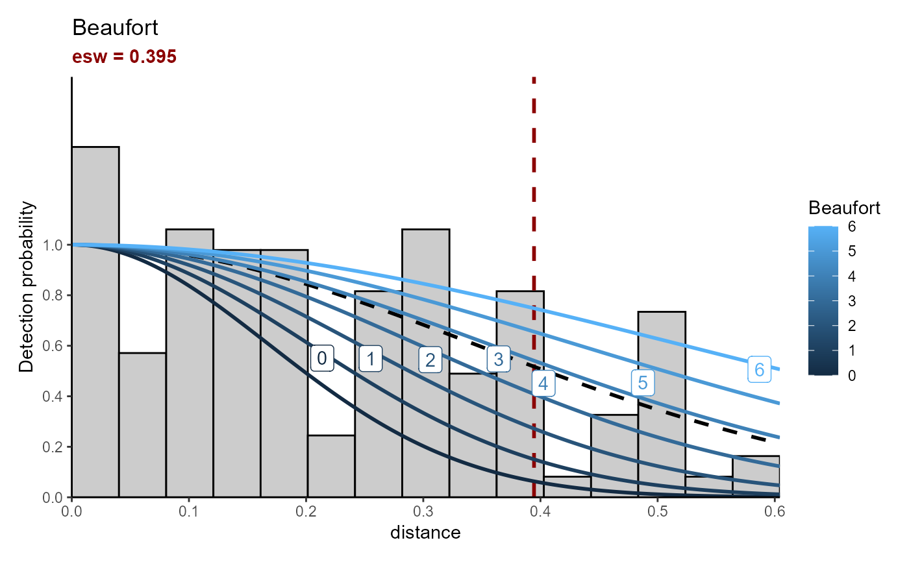
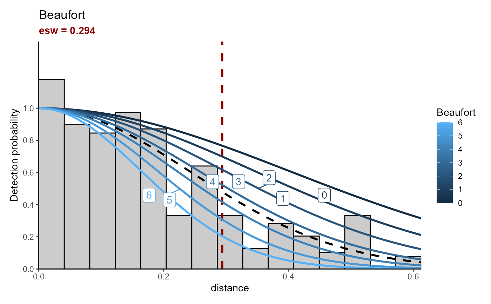

Estimate Effective Strip Width (ESW)
estimate_esw.RdEstimate ESW values based on half-normal (hn) detection function. The function needs dataframe created from 'sight_bindSegID' (AmbiDSM) and 'sightings_to_effort' (pelascope).
Usage
estimate_esw(
data_sight,
data_effort,
species = "DELDEL",
variable = "Beaufort",
var_factor = FALSE
)Arguments
- data_sight
dataframe. Sightings dataset created with 'sight_bindSegID'
- data_effort
sf dataframe. Effort table created with 'sightings_to_effort'
- species
character. Species selected to calculated ESW.
- variable
character. Variable to consider in the ESW calculation.
- var_factor
TRUE/FULSE. If TRUE, all variable are concidered as factor.
Examples
estimate_esw(data_sight = pelascope::Sigthings_with_SegID,
data_effort = pelascope::data_effort_with_sightings,
species = "FULGLA",
variable = c("Beaufort"),
var_factor = FALSE)
#> Calling Distance package, for more information visit:
#> <https://www.st-andrews.ac.uk/mathematics-statistics/research/impact/distance/>.
#>
#> ── Data cleaning ──
#>
#> There are 127 sightings in the dataset selected.
#>
#> ── Model selection ──
#>
#> Fitting half-normal key function
#> AIC= -138.218
#> ── Best model prediction ──
#>
#> Fitting half-normal key function
#> AIC= -138.218
#> ESW values estimated, please check units.
#>
#> ── Update Effort Table ──
#>
#> $plot_esw

#>
#> $data_esw
#> Beaufort mean sd Q_25 Q_97
#> 1 0 0.2288767 0.10348567 0.07720405 0.4702819
#> 2 1 0.2625802 0.08585426 0.11938375 0.4497533
#> 3 2 0.3047621 0.06221789 0.18681791 0.4334731
#> 4 3 0.3546773 0.03678838 0.28088063 0.4234075
#> 5 4 0.4050276 0.03667887 0.33090994 0.4707922
#> 6 5 0.4465378 0.05653429 0.32439361 0.5383772
#> 7 6 0.4767824 0.07278470 0.30445074 0.5781263
#>
#> $model_selection
#> model AIC det_fun
#> 1 1 + Beaufort -138.2179 hn
#>
#> $effort_output
#> Simple feature collection with 390 features and 16 fields
#> Geometry type: POINT
#> Dimension: XY
#> Bounding box: xmin: -5.657199 ymin: 43.66589 xmax: -1.253505 ymax: 48.31222
#> Geodetic CRS: WGS 84
#> # A tibble: 390 × 17
#> Beaufort TransectID plateform n_obs LegID Start_time
#> <dbl> <chr> <chr> <dbl> <chr> <dttm>
#> 1 0 TR_Pelgas_25052023 upper_bridge_out… 2 2505… 2023-05-25 04:57:07
#> 2 1 TR_Pelgas_04052023 upper_bridge_out… 2 0405… 2023-05-04 11:42:53
#> 3 1 TR_Pelgas_05052023 upper_bridge_out… 2 0505… 2023-05-05 13:56:44
#> 4 1 TR_Pelgas_05052023 upper_bridge_out… 2 0505… 2023-05-05 13:56:44
#> 5 1 TR_Pelgas_05052023 upper_bridge_out… 2 0505… 2023-05-05 13:56:44
#> 6 1 TR_Pelgas_05052023 upper_bridge_out… 2 0505… 2023-05-05 13:56:44
#> 7 1 TR_Pelgas_05052023 upper_bridge_out… 2 0505… 2023-05-05 16:09:17
#> 8 1 TR_Pelgas_18052023 upper_bridge_out… 2 1805… 2023-05-18 11:33:05
#> 9 1 TR_Pelgas_22052023 upper_bridge_out… 2 2205… 2023-05-22 15:03:10
#> 10 1 TR_Pelgas_27052023 upper_bridge_out… 2 2705… 2023-05-27 13:24:10
#> # ℹ 380 more rows
#> # ℹ 11 more variables: DateTime <dttm>, End_time <dttm>, SegID <chr>,
#> # Effort <dbl>, geometry <POINT [°]>, det.FULGLA <dbl>, ind.FULGLA <dbl>,
#> # mean_esw_FULGLA <dbl>, sd_esw_FULGLA <dbl>, Q25_esw_FULGLA <dbl>,
#> # Q75_esw_FULGLA <dbl>
#>
estimate_esw(data_sight = pelascope::Sigthings_with_SegID,
data_effort = pelascope::data_effort_with_sightings,
species = c("DELDEL", "DELSPP") ,
variable = c("Beaufort", "plateform"),
var_factor = FALSE)
#> Calling Distance package, for more information visit:
#> <https://www.st-andrews.ac.uk/mathematics-statistics/research/impact/distance/>.
#>
#> ── Data cleaning ──
#>
#> There are 295 sightings in the dataset selected.
#>
#> ── Model selection ──
#>
#> Fitting half-normal key function
#> AIC= -422.815
#> Fitting half-normal key function
#> AIC= -415.657
#> Fitting half-normal key function
#> AIC= -424.395
#> ── Best model prediction ──
#>
#> Fitting half-normal key function
#> AIC= -424.395
#> ESW values estimated, please check units.
#>
#> ── Update Effort Table ──
#>
#> $plot_esw

#>
#> $data_esw
#> Beaufort mean sd Q_25 Q_97
#> 1 0 0.4363933 0.04596909 0.3389110 0.5191222
#> 2 1 0.3997283 0.03817075 0.3209348 0.4726061
#> 3 2 0.3593246 0.02759497 0.3050878 0.4137534
#> 4 3 0.3174287 0.01663856 0.2842595 0.3517005
#> 5 4 0.2769312 0.01228014 0.2530413 0.3012345
#> 6 5 0.2401968 0.01760404 0.2058173 0.2753305
#> 7 6 0.2081729 0.02421398 0.1631331 0.2572739
#>
#> $model_selection
#> model AIC det_fun
#> 1 1 + Beaufort -424.3949 hn
#> 2 1 + Beaufort + plateform -422.8151 hn
#> 3 1 + plateform -415.6568 hn
#>
#> $effort_output
#> Simple feature collection with 390 features and 20 fields
#> Geometry type: POINT
#> Dimension: XY
#> Bounding box: xmin: -5.657199 ymin: 43.66589 xmax: -1.253505 ymax: 48.31222
#> Geodetic CRS: WGS 84
#> # A tibble: 390 × 21
#> Beaufort TransectID plateform n_obs LegID Start_time
#> <dbl> <chr> <chr> <dbl> <chr> <dttm>
#> 1 0 TR_Pelgas_25052023 upper_bridge_out… 2 2505… 2023-05-25 04:57:07
#> 2 1 TR_Pelgas_04052023 upper_bridge_out… 2 0405… 2023-05-04 11:42:53
#> 3 1 TR_Pelgas_05052023 upper_bridge_out… 2 0505… 2023-05-05 13:56:44
#> 4 1 TR_Pelgas_05052023 upper_bridge_out… 2 0505… 2023-05-05 13:56:44
#> 5 1 TR_Pelgas_05052023 upper_bridge_out… 2 0505… 2023-05-05 13:56:44
#> 6 1 TR_Pelgas_05052023 upper_bridge_out… 2 0505… 2023-05-05 13:56:44
#> 7 1 TR_Pelgas_05052023 upper_bridge_out… 2 0505… 2023-05-05 16:09:17
#> 8 1 TR_Pelgas_18052023 upper_bridge_out… 2 1805… 2023-05-18 11:33:05
#> 9 1 TR_Pelgas_22052023 upper_bridge_out… 2 2205… 2023-05-22 15:03:10
#> 10 1 TR_Pelgas_27052023 upper_bridge_out… 2 2705… 2023-05-27 13:24:10
#> # ℹ 380 more rows
#> # ℹ 15 more variables: DateTime <dttm>, End_time <dttm>, SegID <chr>,
#> # Effort <dbl>, geometry <POINT [°]>, det.DELDEL <int>, ind.DELDEL <int>,
#> # det.DELSPP <int>, ind.DELSPP <int>, ind.DELDEL_DELSPP <dbl>,
#> # det.DELDEL_DELSPP <dbl>, mean_esw_DELDEL_DELSPP <dbl>,
#> # sd_esw_DELDEL_DELSPP <dbl>, Q25_esw_DELDEL_DELSPP <dbl>,
#> # Q75_esw_DELDEL_DELSPP <dbl>
#>